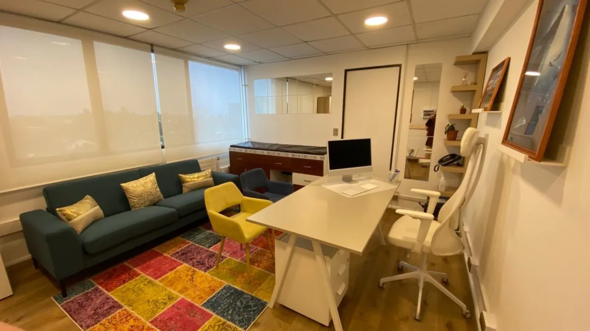
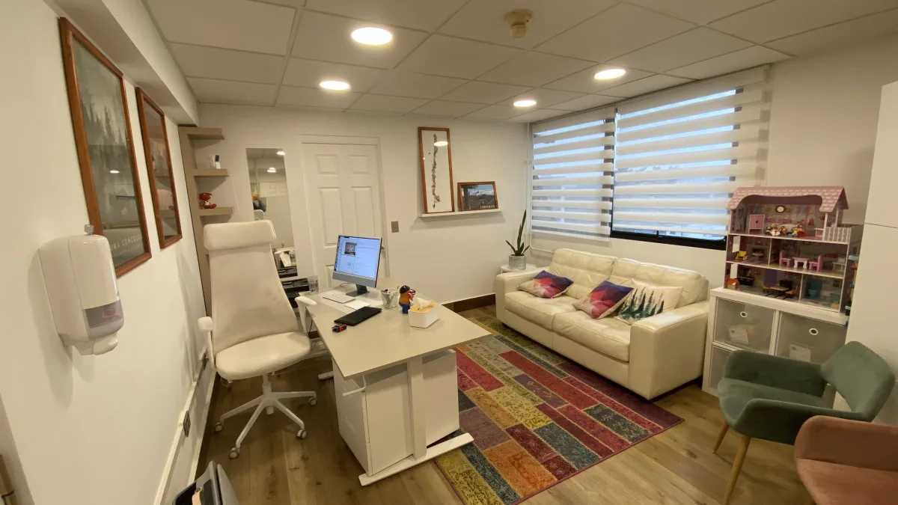
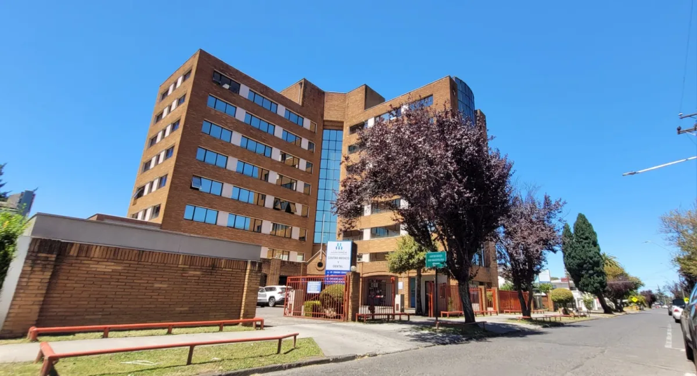

Cada especialidad tiene su propio proceso — aquí te explicamos qué esperar en cada caso, tanto en modalidad presencial como virtual.
Algunas condiciones las atiende una especialidad, otras pueden ser abordadas por ambas según el caso
Dependiendo del caso, el foco del abordaje puede ser neurológico, psiquiátrico o conjunto.
El punto de entrada depende de la presentación. Si tiene dudas, revise la guía o escríbanos.
Ver guía condición por condición →Espacios diseñados para que niños, niñas, adolescentes y sus familias se sientan cómodos


Dinamarca 621, Temuco — Centro Médico y Dental

Secretaría y horarios de consultas médicas
Secretaría atiende en ambas alas — el ala varía según el día.
| Lunes | 10:30 – 16:00 h | Ala 770 |
| Martes | 10:30 – 12:30 h | Ala 870 → luego Ala 770 |
| Miércoles | 10:30 – 16:00 h | Ala 870 |
| Jueves | 10:30 – 16:00 h | Ala 870 |
| Viernes | 10:30 – 16:30 h | Ala 770 |
Si llega a la Of. 801 y la secretaría no está en el Ala 870, avise su llegada por WhatsApp — le confirmaremos de inmediato.
| Lunes | 11:00 – 15:00 h |
| Martes | 12:30 – 15:00 h |
| Viernes | 11:00 – 15:00 h |
| Lunes | 11:00 – 15:00 h |
| Martes | 11:00 – 15:00 h |
| Miércoles | 11:00 – 16:00 h |
| Jueves | 11:00 – 15:00 h |
| Viernes | 11:00 – 15:00 h |
Lea estos puntos antes de agendar una hora en modalidad virtual